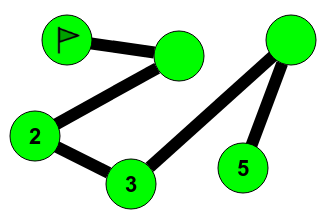
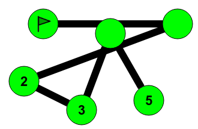
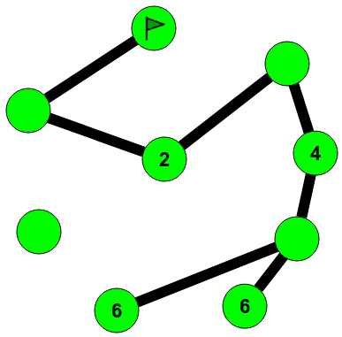
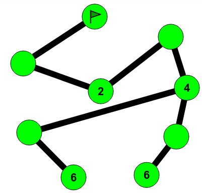
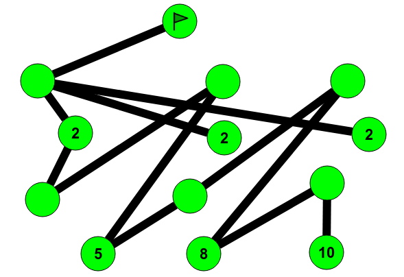
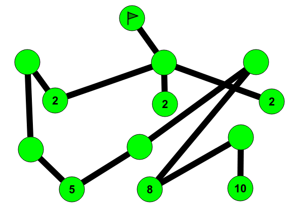

يرغب القندس في بناء طرق بين الأشجار
قواعد اللعبة: الرقم المكتوب على الشجرة يدل على عدد الطرق التي يجب أن تمد بين الشجرة وبين العلم. انظر إلى المثال.
لإضافة طريق بين شجرتين، انقر على الشجرتين ولإزالة طريق، انقر عليه
الحل:

في الشكل الأعلى، إذا اضفنا رقم 1 لأول شجرة غير مرقمة وأضفنا رقم 4 لثاني شجرة غير مرقمة فسوف نجد أن العدد المكتوب على الشجرة هو عدد الطرق التي تسبق الشجرة حتى تصل إلى العلم
لاحظ أن هناك أيضا حل أخر، كما هو مبين في الشكل بالأسفل

الحل:

للاحظ أن هناك أيضا حلول أخرى

الحل:

للاحظ أن هناك أيضا حلول أخرى

This topic illustrates a concept widely used in computer science: the notion of distance in a graph. Starting from a starting point, we try to reach all the green circles following the black lines. The goal is to number each round with its smaller distance possible at the starting point.